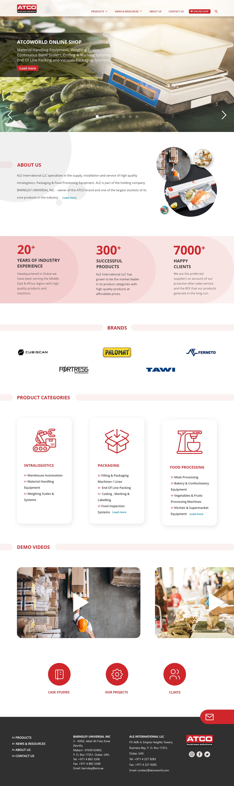

Loading
Hello there
(Welcome)
I design things that feel
sharp, thoughtful,
and a little unexpected.
I'm
A Senior UI/UX Designer from Kochi, constantly experimenting, questioning, and figuring things out — one pixel at a time.
More About MeReal products, real problems, real outcomes
 4.jpg.jpeg)
End-to-end hotel booking experience — user research, journey mapping, information architecture, and high-fidelity UI design for a seamless travel booking flow.

Health and wellness product design — intuitive onboarding, personalised dashboards, and a clean visual language that puts user wellbeing first.

Task and project management SaaS — designed for teams that need clarity. Clean dashboards, smart workflows, and a design system built for scale.
.jpg.jpeg)
Corporate website redesign with a strong visual identity — modern layout system, brand-consistent design language, and conversion-optimised page structures.

Full-scale web UI design at 1920px — bold layout composition, strong visual hierarchy, and a refined design system for a modern digital experience.

Continuation of the Web 1920 series — deeper interaction design, refined motion principles, and a more sophisticated visual language for digital interfaces.
 4.png)
High-fidelity visual design iteration for the hotel booking platform — refined UI components, updated colour system, and polished responsive layouts.
// expertise
5+ years shaping digital products across B2B, B2C, SaaS, and AI domains.
// career
Led design for 20+ web and mobile apps including SaaS and enterprise platforms. Established design systems, drove UX research, and leveraged AI-assisted workflows.
End-to-end UX research and design for MARC C2C platform and Asset Management software. Developed information architecture and B2C e-commerce application flows.
Delivered UI/UX solutions for 10+ client projects. Redesigned applications and websites, and created branding assets including logos, social media creatives, and packaging.
// education
Asian Institute of Design, Bangalore
Comprehensive training in User Experience and User Interface Design principles. Hands-on experience in user research, wireframing, prototyping, information architecture, and usability testing. Specialized in industry-standard tools including Figma and Adobe XD.
St. Mary's College, Sulthan Bathery
Core subjects in software engineering, database systems, networking, and application development methodologies. Developed logical thinking and problem-solving abilities through hands-on programming and team projects.
// questions
I follow a user-centered approach: Research & Discovery → Information Architecture → Wireframing → Visual Design → Prototyping → Testing & Iteration. I involve stakeholders and users throughout to make sure we're solving the right problems.
Absolutely. I have extensive experience collaborating with engineering and QA teams. I provide detailed specs, style guides, and stay involved through development to ensure the final product matches the design intent.
Primarily Figma and FigJam for UI/UX and collaboration. Adobe Photoshop and Illustrator for visual design. I also use AI tools like ChatGPT, Claude, and UX Pilot to accelerate research and ideation, plus Framer and InVision for advanced prototyping.
Yes — AutoVista is a great example. I've also integrated AI-assisted design workflows into my day-to-day process: using tools like UX Pilot and Figma Make for faster iteration, and AI-driven research techniques to generate richer UX insights.
It depends on scope. A focused feature design can take 2–3 weeks. A full product with discovery, research, and testing typically runs 8–12 weeks. I always provide a clear timeline with deliverables before we start.
Yes, I take on select freelance projects alongside my full-time work. If you have something interesting, reach out at vishnurajkj001@gmail.com and let's talk.